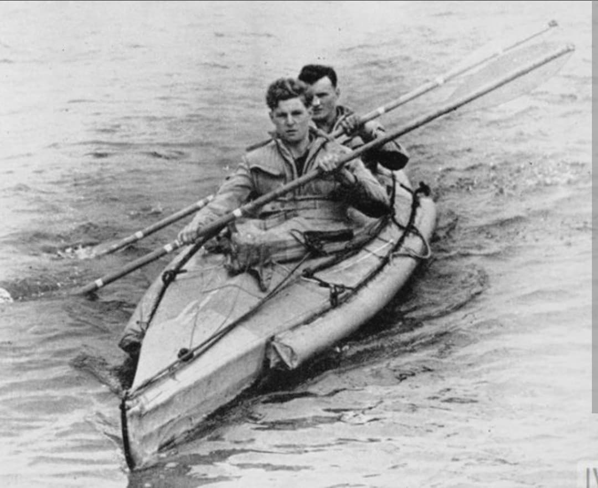
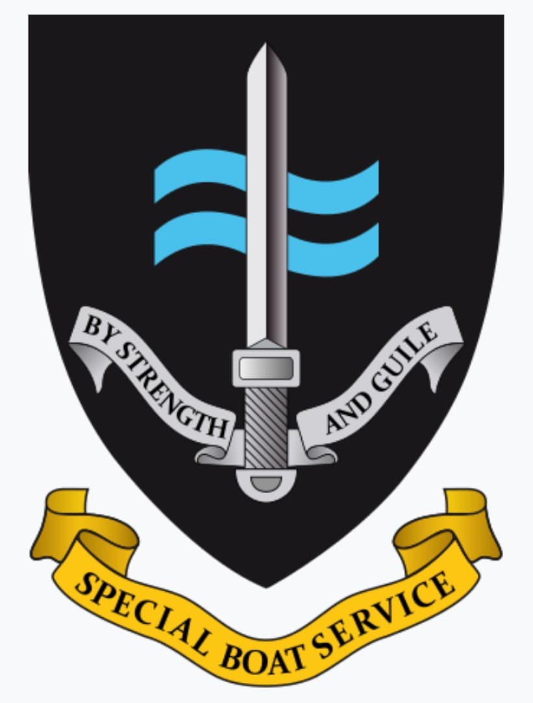
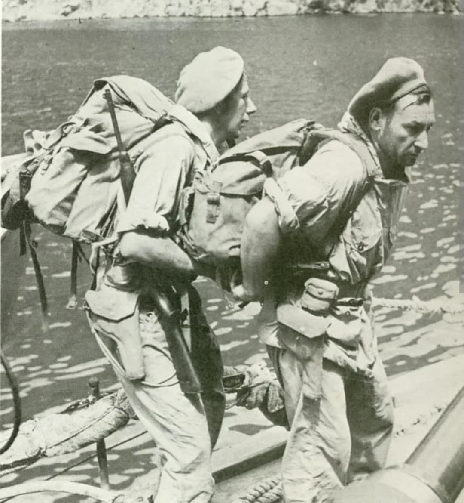

Les fantômes de la mer : commandos en kayaks, infiltrations sous-marines et sabotage amphibie

La Special Boat Section (SBS) est l'unité spéciale amphibie de l'armée britannique créée durant la Seconde Guerre mondiale. Spécialisée dans les opérations maritimes clandestines, le sabotage de navires et la reconnaissance côtière furtive, elle est l'ancêtre direct des unités de nages de combat modernes.
Opérant dans l'ombre à bord de sous-marins, d'embarcations pneumatiques et de kayaks pliants (les fameux Folbots), les hommes de la SBS ont semé le désordre sur les côtes occupées de la Méditerranée et de l'Europe de l'Ouest.
Créée en 1940 par le capitaine **Roger Courtney**, un passionné de canoë et de chasse en milieu sauvage, l'unité naît de la démonstration de l'efficacité des petits kayaks invisibles pour approcher des navires sans se faire repérer.
Formés aux méthodes de combat rapproché, au maniement des mines limpet magnétiques et aux infiltrations sous-marines à partir de sous-marins de la Royal Navy, ces commandos maritimes ont rapidement prouvé la valeur inestimable de leurs techniques artisanales mais redoutables.

La SBS s'illustre particulièrement sur le théâtre méditerranéen. Ses hommes effectuent des reconnaissances nocturnes sur les plages d'Afrique du Nord, d'Italie et de Sicile en amont des débarquements alliés, effectuant des relevés topographiques et neutralisant les mines côtières.
Dans la mer Égée, les commandos de la SBS mènent une véritable guerre de corsaires modernes à bord de caïques de pêche grecques armées de mitrailleuses, harcelant les garnisons allemandes isolées dans les îles.

Durant la préparation du débarquement de Normandie, les unités de reconnoissance amphibie dérivées de la SBS (comme les COPP - *Combined Operations Pilotage Parties*) cartographient en secret la consistance du sable et la disposition des obstacles sous-marins des plages françaises.
Après la guerre, la tradition et le savoir-faire de l'unité sont perpétués au sein des Royal Marines, donnant naissance au **Special Boat Service** actuel, équivalent naval du SAS.
Page du Musée HOP WW2 – Section Unités & Divisions